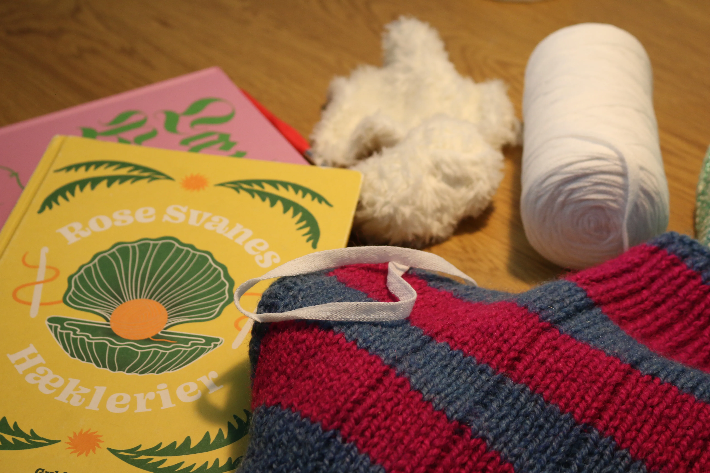

IDAS PASSION FOR AT STRIKKE OG HÆKLE
EN INDRE RO OG FORDYBELSE
Ida fandt for alvor passionen for at strikke og hækle, da hun som mange andre fik en masse tid tilovers under coronakrisen. Sammen med hendes mormor har hun strikket og hæklet alt fra kjoler, bluser, tasker og enda også blomster. Når Ida strikker finder hun en indre ro ved at forybe sig og slå tankerne fra i en travl hverdag. Her henter hun inspiration fra både Pinterest, Instagram og bøger.
